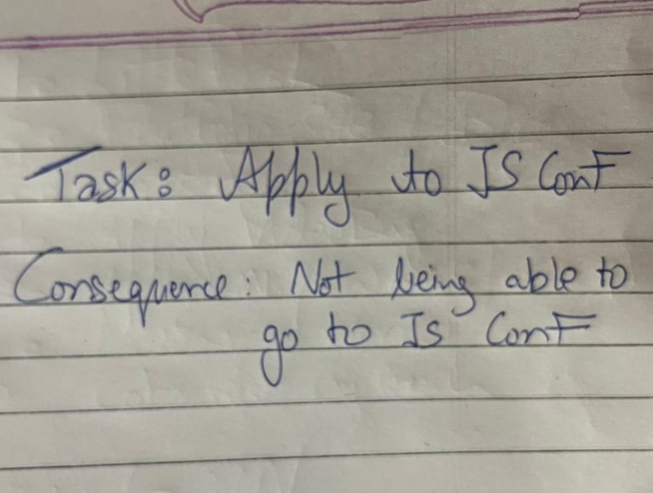
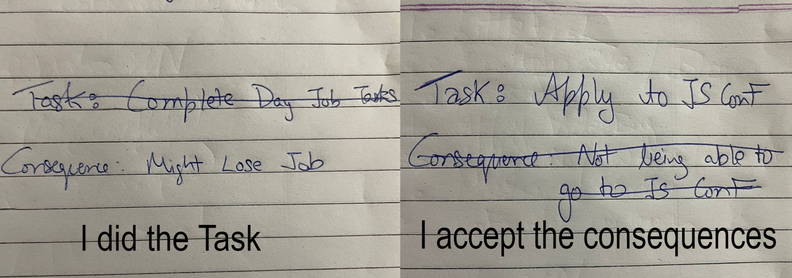

I've seen countless apps, methodologies, scientism, talks, conversations on TODO Lists to the point it has spun into its own genre. Let me outline some methodologies and why they don't work. Then I'll talk about what really worked well for me at least.
This offers no prioritization, you will often miss important
tasks. Eventually, it will also become overwhelming when hundred
chores are staring down at you all the time.
How to solve this: Organize your tasks.
Cool you say, Let's organize them using a TODO app. This is
the worst option by far. These apps have slick UI but the whole
point of the list is to motivate yourself to do the task. The
feeling you get crossing a line on a paper is unmatched compared to
touching on an app. Further, these apps just hide your achievement
so you'll be even less incentivized.
How to solve this: Use paper-pen/whiteboard instead of these apps.
If you've ventured deep into productivity lore, you'll know there's something called the "Four Quadrant Method" [2]. In brief, you split your tasks into four sections:
The strategy is to pick the tasks in the priorities given above.
This means you'll be able to pick all the important tasks first.
I liked this approach initially but eventually realized: ”Tasks are
not the same. Get milk, write an essay, plan a vacation, reconnect
with a friend. These are things of different magnitude, different
emotional connection, different context and time commitment.” [1]
Quadrant just means you miss the essence of the task, why it's
important and why you should do it.
I moved a step back into the giant list. But now with each task,
I'll write a consequence of not doing it.
Ex:
Task - Apply to JS Conference
Consequence - Not being able to attend JS Conf.
It's Sunday night and I pick up this task. Then I play Counter-Strike for the rest of the night. In the morning, I can either decide to keep this in the pile or if the pile has grown too much, I'll just cross this out meaning I accept the consequences of not doing this.

This helps in keeping my priorities sorted. Not doing the day job
tasks have harsher consequences than this, so I'll naturally pick
those out first. You can also mix the four Quadrant approach here
but I found it to be overkill.
If the list grows large, this means I'm struggling to let go. At
this point, It's important to remind myself that as an adult, there
are things I will miss in life. And it's strangely relieving.
Another benefit is that, this help you uncover truths about your
values. Like if you're pursuing a field only because your parents
wants you too. The consequence here would be “disappointed parents”.
Note - DO NOT make a task out of things you love to do. I did not make a task of “playing video games”. If you like them so much, you'll make space for it and accept consequences of not doing other tasks. Making it a task will only diminish the joy.
Thanks for Reading, you can email me at prakhar897@gmail.com to share your thoughts!